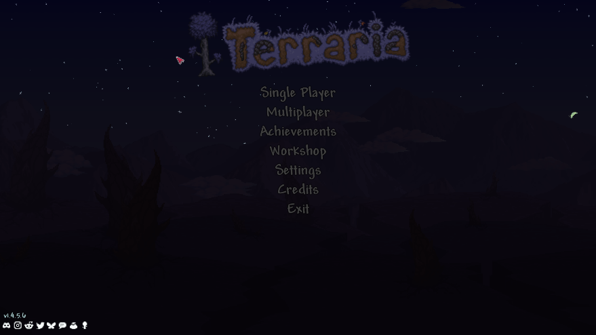
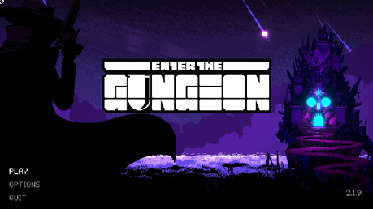
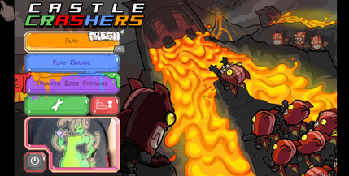
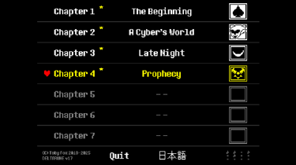

Game 1, Terraria: Terraria is one of my favorite games, period. I have been playing since I was in elementary school. A lot of people (jokingly or not), label Terraria as just a “2d Minecraft”, these games are actually VERY different. Minecraft might do better with overall creativity and exploration, Terraria is much better with everything else in my opinion. The main gaimplay loop revolves around gearing up to fight the various bosses the game has to offer. The boss fight start out with a giant slime and ends with the game saying “here is a literal eldritch god, good luck” . I have hundreds of hours in this game and even I have not experience everything in the game, not to mention all of the great mods to choose from. You can get hours of enjoyment from this game just like I have (plus the game is $10 when it is not on sale).
Terraria
Game Link 1
Game 2, Enter the Gungeon: This is a game I rarely see anyone talk about, but it is an absolute gem of a game. The story revolves around the Gungeon, a magical place where anyone can go to and fix a mistake of their past. The problem is, it is full of monsters that are very good at stopping you from achieving that goal. The entire theme of the game is guns, the enemies are living bullets, all the items and weapons are gun-based, and the final boss is as literal gun dragon that spits bullets at you instead of fire. The whole game has this charming, cartoon style to it that is perfect. The game itself is a dungeon crawler that is similar to the Binding of Isaac if you have heard of that. Enter the Gungeon has 7 playable characters (most of which you unlock by playing the game), and hundreds of items and weapons to use. The game is randomly generated, meaning all the layouts of the levels, the bosses, and the items you pick up thought are all rng. Meaning that you can have one run where you get trash items and will probably die if you are not experienced, or you get god-tier items and guns that allow you to steamroll through the game if you don’t get careless. The game is still very skill based thankfully, the good guns mean nothing if you can’t dodge or aim properly. There is so much replay value and content in the game that few people can say that they have experienced everything. The developers really poured their soul into this game and it shows, from the art, the gameplay, the jokes, and the secrets you can unlock.
Gungeon
Game Link 2
Game 3: Castle Crashers. This is a very old one, but I love it nonetheless. A little dated but Castle Crashers is a beat-em-up game where you play as a knight trying to rescue the princesses from the evil wizard. The gameplay focuses on magic and comboing your enemies. There are 32 playable characters with 21 different magic types. The game has a hardmode that is honestly one of the hardest things I have ever tried to beat, and I was never able to beat the second to last boss as a result. It is a fun, simple game that I think is worth a playthrough or two. (it also just got a remaster that allows you to create your own characters!)
Castle Crashers
Game Link 3
Game 4: Deltarune; the final one I have on this list is Deltarune. While I love Undertale, Deltarune beats it out for me because of the themes and the character dynamics. It is hard to explain in text, but the way everything plays out, the character interactions, and the unique dynamic between the player and the main character leads to a very interesting story being played out while your own character has their own motives and often tries to get in your way. The gameplay itself is a small rpg where you have various items, weapons, and armor to collect to help you out, alongside plenty of secret ones (those are the best). The game hasn’t released all the chapters yet, but I still recommend a playthrough of it